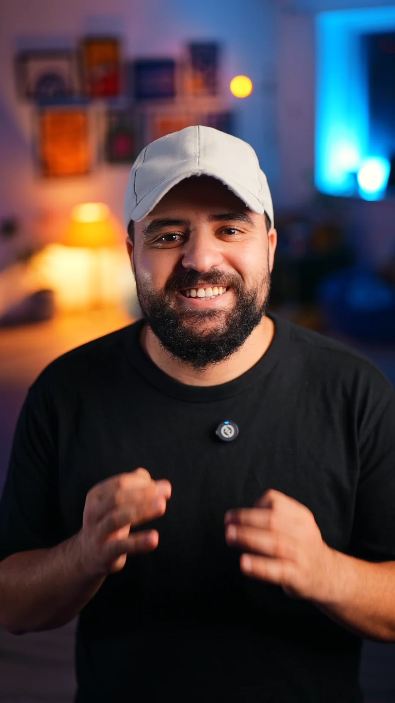

01The Start
Eight years ago I opened an editing timeline and never really closed it. Cutting other people's footage taught me exactly what makes a viewer stay — and what makes them scroll.
Mohamed Amine Sehili · Content Creator
Scroll
Selected work — written, shot & edited by me
Concept · Script · Shoot · Edit · Post
Brands don't need more content. They need stories people stop for. I write, shoot and edit reels end to end — so your message lands in the first three seconds.

Practical light RGB light Set dressing Depth of field Lav micBehind the camera — real set, real lights
Eight years ago I opened an editing timeline and never really closed it. Cutting other people's footage taught me exactly what makes a viewer stay — and what makes them scroll.
So I picked up the camera and started writing my own stories. Psychology, identity, cinema — told in Tunisian, shot like a film, cut for the feed.
Today I build content end to end for brands like Brima Digital, Brima House and Next Level: the idea, the script, the shoot, the edit. One person, one vision, nothing lost between hands.
Mohamed Amine Sehili
Content creator & filmmaker · Tunisia
Trusted by
 Brima Digital
Brima Digital Brima House
Brima HouseHow I work
The angle and the hook that make people stop.
Every second written for retention, in Arabic, French or English.
Cinematic footage, lighting and sound — on location or in studio.
Pacing, sound design, color grade, subtitles. Ready to post.
© 2026 Mohamed Amine Sehili